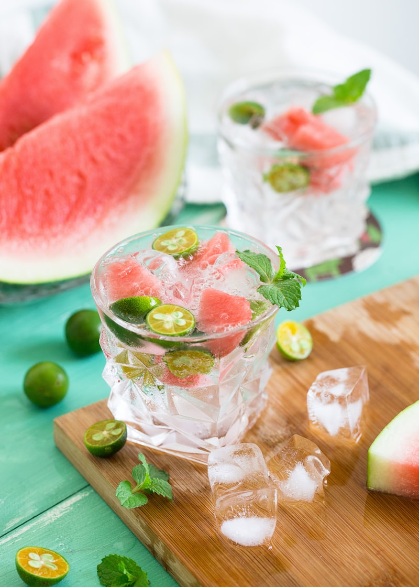
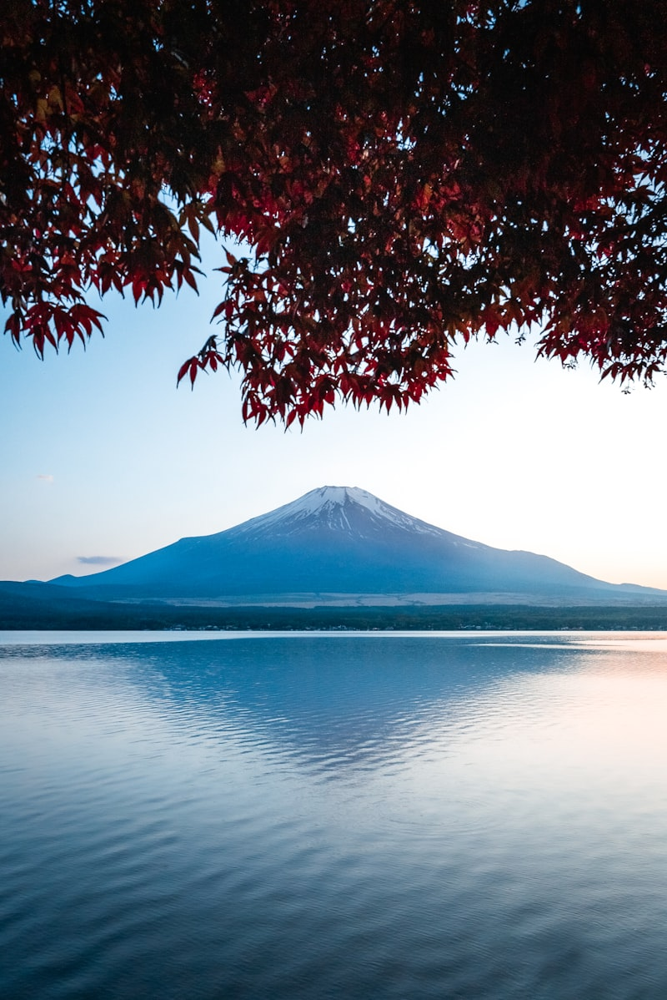
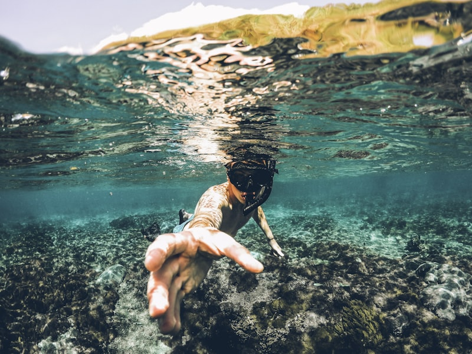

🏔️ 沿途風光
滑動瀏覽萊茵河路線上的經典景觀

🏔️ 萊茵河源頭
Andermatt
阿爾卑斯山區起點 · 萊茵河發源地
← 起點

🇨🇭 琉森湖
Luzern
琉森湖 · 卡佩爾橋 · 皮拉圖斯山
↓

🏰 城堡之路
中萊茵峽谷
UNESCO 世界遺產 · 城堡與葡萄園
↓

⛪ 科隆大教堂
Köln
科隆大教堂 · 萊茵河畔老城
↓

🌊 北海終點
Hoek van Holland
北海海岸 · 旅程終點
→ 終點
← 左右滑動／點擊上方卡片檢視沿途亮點位置